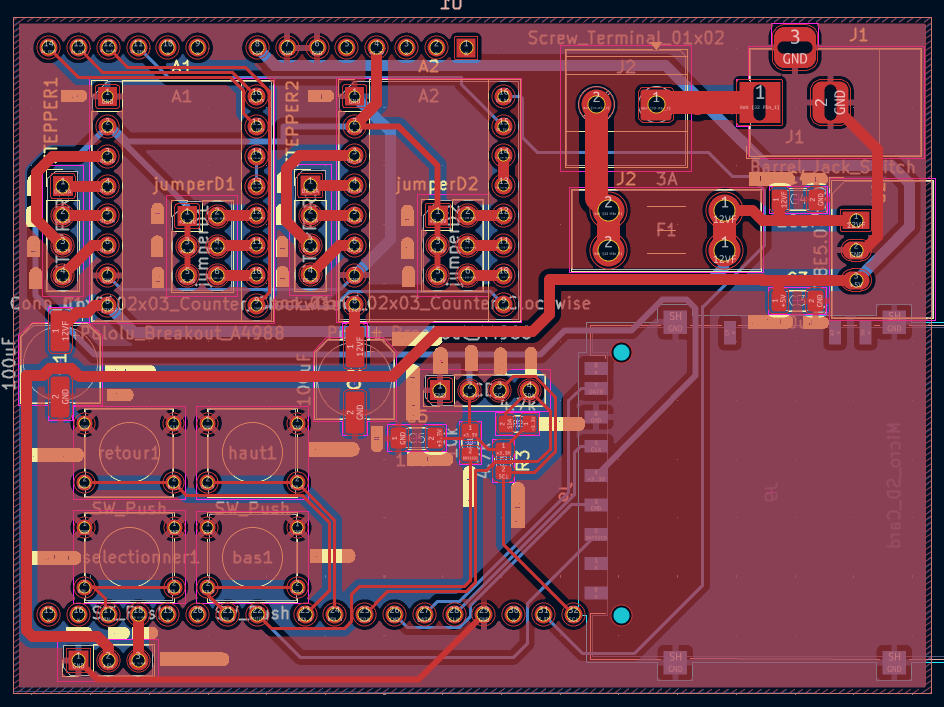

Routage du PCB Maison
Ce routage a été réalisé pour garantir une stabilité électrique maximale malgré les courants élevés demandés par les moteurs pas-à-pas.

Vue du routage double couche (Top: Rouge / Bottom: Bleu)
1. Architecture et Composants
Le PCB centralise l'intégralité de l'intelligence et de la puissance de la machine :
- Empreinte ESP32 UNO: L'emprinte de l'esp32 uno est placé au centre pour pouvoir prévoir l'installation des composants.
- Double Drivers Moteurs (A1 & A2) : Emplacements pour drivers type A4988, avec condensateurs de filtrage (100µF) placés au plus près des broches d'alimentation pour absorber les pics de courant.
- Connecteurs d'alimentation : Un connecteur dédié pour l'alimentation 12V des moteurs et un port USB pour la partie logique (ESP32).
- Le support de carte SD : Il est placer en dessous du pcb pour gagner de la place
2. Stratégie de Routage Technique
La conception a suivi des règles strictes pour assurer la fiabilité du tracé :
- Gestion de la puissance : Les pistes transportant le 12V (en rouge large) ont été dimensionnées pour supporter l'ampérage des moteurs sans chauffer ni provoquer de chute de tension.
- Plan de masse (GND) : Utilisation de larges zones de cuivre pour minimiser les parasites électromagnétiques (EMI) générés par les commutations rapides des moteurs.
- Double couche optimisée : Les signaux logiques transitent majoritairement par la couche inférieure (bleue) pour éviter de croiser les lignes de puissance et réduire les interférences.
- Protection : Intégration d'un fusible (F1) et de diodes de protection pour sécuriser l'électronique contre les inversions de polarité ou les surcharges.
⚡ Note de fabrication : Le PCB est conçu pour être compact tout en laissant suffisamment d'espace pour l'évacuation thermique des drivers moteurs, point critique lors de longs tracés de portraits.